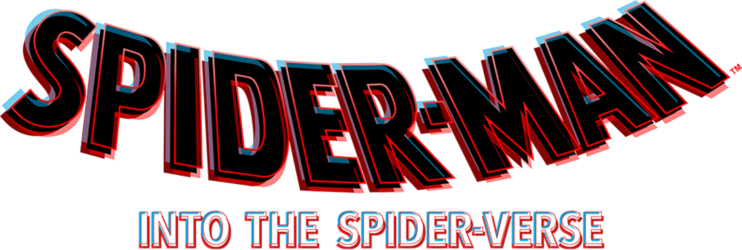

- Ano: 2018
- Diretor: Peter Ramsey
Sinopse: Após ser atingido por uma aranha radioativa, Miles Morales, um jovem negro do Brooklyn, se torna o Homem-Aranha, inspirado no legado do já falecido Peter Parker. Entretanto, ao visitar o túmulo de seu ídolo em uma noite chuvosa, ele é surpreendido com a presença do próprio Peter, vestindo o traje do herói por baixo de um sobretudo. A surpresa fica ainda maior quando Miles descobre que ele veio de uma dimensão paralela, assim como outras versões do Homem-Aranha.